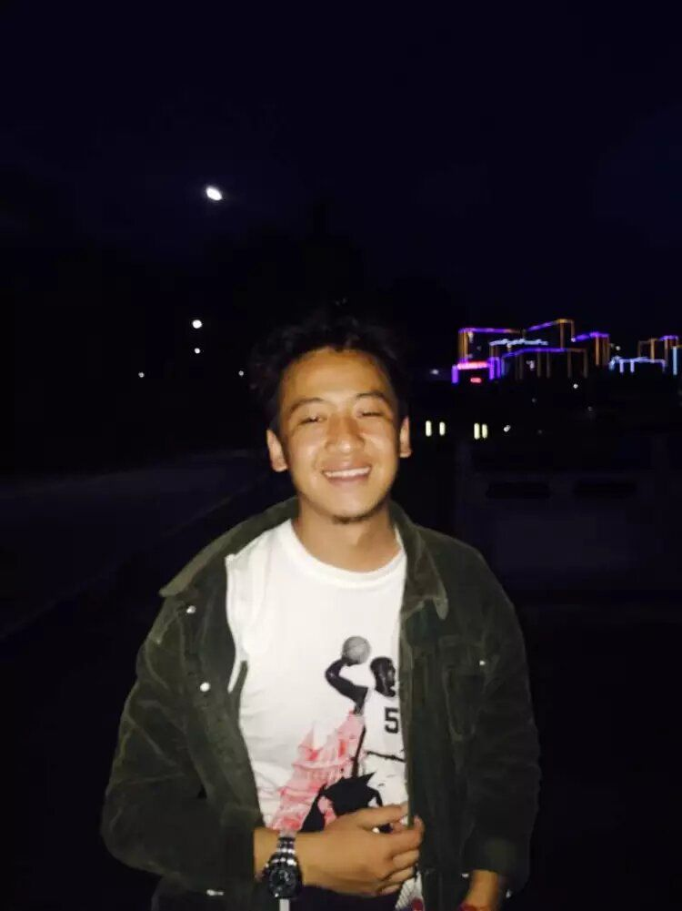

Wenhui Zhu (朱文辉)
I am a Ph.D. Candidate at the School of Computing and Augmented Intelligence (SCAI), Arizona State University, advised by Prof. Yalin Wang.
My research spans across the frontier of Generative AI, focusing on Post-Training, Agentic Reinforcement Learning, and Efficient MLLMs/LLMs.
I build autonomous, long-horizon LLM & VLM agents through the lens of algorithmic efficiency and scalable post-training. My research covers the full lifecycle of agentic foundation models: from large-scale data curation and on-policy/semi-on-policy LLM distillation, to agentic reinforcement learning and self-play/self-correcting architectures. I am also deeply invested in advancing Diffusion Language Models (dLLMs) and Embedded Language Flows.
My work has been regularly presented at top-tier venues including CVPR, ECCV, ICML, ICCV, ACL, COLM, and AAAI.
Email: wzhu59@asu.edu
 / /


|

📍 Tempe, Arizona, USA
|
🔥 Post-Training & Alignment
S-SPPO: Semantic-Calibrated Self-Play Preference Optimization [ICML 2026 Regular]
Peijie Qiu*, Wenhui Zhu*, Xiwen Chen, Jingjing Wang, Peijie Qiu, Zhipeng Wang, Huayu Li, ZhengXiao He, Xuanzhao Dong, Prayag Tiwari, Mingkun Xu, Yujian Xiong, Feng Luo, Abolfazl Razi, Brendan Hogan Rappazzo, Anderson Schneider, et al.
Proceedings of the International Conference on Machine Learning (ICML), 2026. [Accept (regular)]
* Equal contribution
|
Dra-GRPO: Exploring Diversity-Aware Reward Adjustment for R1-Zero-Like Training of Large Language Models [ACL 2026]
Xiwen Chen*, Wenhui Zhu*, Peijie Qiu, Xuanzhao Dong, Haoran Wang, Hong Wu, Huayu Li, Aristeidis Sotiras, Yalin Wang, et al.
Proceedings of the Annual Meeting of the Association for Computational Linguistics (ACL), 2026.
[Paper]
* Equal contribution
|
Sampling for Quality: Training-Free Reward-Guided LLM Decoding via Sequential Monte Carlo
J. Markovic-Voronov*, Wenhui Zhu*, Bo Long, Zhen Wang, Shixiang Shane Gu, Kayhan Behdin, et al.
arXiv preprint arXiv:2604.16453, 2026.
[Paper]
* Equal contribution
|
Prompt-OT: An Optimal Transport Regularization Paradigm for Knowledge Preservation in Vision-Language Model Adaptation [WACV 2026]
Xiwen Chen*, Wenhui Zhu*, Peijie Qiu, Haoran Wang, Huayu Li, Hong Wu, Xuanzhao Dong, Aristeidis Sotiras, Yalin Wang, et al.
Proceedings of the IEEE/CVF Winter Conference on Applications of Computer Vision (WACV), 2026.
* Equal contribution
|
What Matters in Reinforcement Learning Based Training for Medical Vision Language Model: An Empirical Study [WACV 2026 / Joint First]
Wenhui Zhu*, Xuanzhao Dong, Xin Li, Peijie Qiu, Xiwen Chen, Walker Northrup, Abolfazl Razi, Aris Sotiras, Yi Su, Zhipeng Wang, Shao Tang, Yalin Wang.
Proceedings of the IEEE/CVF Winter Conference on Applications of Computer Vision (WACV), 2026, pp. 303-313.
* Equal contribution
|
AHA: Aligning Large Audio-Language Models for Reasoning Hallucinations via Counterfactual Hard Negatives [ACL 2026 / Joint First]
Yanxi Chen, Wenhui Zhu*, Xiwen Chen, Zhipeng Wang, Xin Li, Peijie Qiu, Hao Wang, Xuanzhao Dong*, Yujian Xiong, Anderson Schneider, Yuriy Nevmyvaka, Yalin Wang. (* Equal Contribution)
Proceedings of the Association for Computational Linguistics (ACL), 2026.
* Equal contribution
|
🤖 Agentic Reinforcement Learning & Systems
Mags-RL: Wearing Multimodal LLMs a Magnifying Glass via Agentic Reinforcement Learning For Complex Scene Reasoning
Xuanzhao Dong*, Wenhui Zhu*, Peijie Qiu, Xiwen Chen, Xiaobing Yu, Xin Li, Zhipeng Wang, Shao Tang, Gen Li, Yujian Xiong, Hao Wang, Yanxi Chen, Prayag Tiwari, Yalin Wang.
arXiv preprint arXiv:2605.xxxxx, 2026.
[Paper]
* Equal contribution
|
Context Pruning for Coding Agents via Multi-Rubric Latent Reasoning
Jingjing Wang*, Xiwen Chen*, Wenhui Zhu*, Huayu Li, Zhipeng Wang, ZhengXiao He, F. Cai, A. S. Carreon-Rascon, Xuanzhao Dong, et al.
arXiv preprint arXiv:2605.15315, 2026.
[Paper]
* Equal contribution
|
SHARP: A Self-Evolving Human-Auditable Rubric Policy for Financial Trading Agents
Xiwen Chen*, Wenhui Zhu*, S. Zheng, K. Rasul, Y. Deng, Huayu Li.
arXiv preprint arXiv:2605.06822, 2026.
[Paper]
* Equal contribution
|
AriadneMem: Threading the Maze of Lifelong Memory for LLM Agents [First Author]
Wenhui Zhu, Xiwen Chen, Zhipeng Wang, Jingjing Wang, Xuanzhao Dong, M. Huang, R. Cai, Huaijin Sang, et al.
arXiv preprint arXiv:2603.03290, 2026.
[Paper]
|
EZBlender: Efficient 3D Editing with Plan-and-ReAct Agent [WACV 2026]
Haoran Wang*, Wenhui Zhu*, S. Tang, Zhipeng Wang, Xuanzhao Dong, X. Li, Xiwen Chen, A. Bastola, et al.
Proceedings of the IEEE/CVF Winter Conference on Applications of Computer Vision (WACV), 2026.
* Equal contribution
|
Your Agent is More Brittle Than You Think: Uncovering Indirect Injection Vulnerabilities in Agentic LLMs [First Author]
Wenhui Zhu, Xuanzhao Dong, Xiwen Chen, R. Cai, Peijie Qiu, Zhipeng Wang, O. Frunza, S. Tang, J. Gu, et al.
arXiv preprint arXiv:2604.03870, 2026.
[Paper]
|
⚡ Efficient MLLMs/LLMs & Generative Modeling & Large Scale Data Curation
Ophth-500K: Curating Unstructured Video Streams for Scaling Multimodal Ophthalmology Foundation Models [Under Review]
Hao Wang, Xin Li, Wenhui Zhu*, XUANZHAO DONG, Xiwen Chen, Yujian Xiong, Langechuan Liu, Abolfazl Razi, Oana Dumitrascu, Yalin Wang.
arXiv Preprint, 2026.
* Equal contribution
|
OphIn-500K: Curating Web-Scale Visual Instructions for Scaling Ophthalmic Multimodal Large Language Models [Under Review]
XUANZHAO DONG, Wenhui Zhu*, Xiwen Chen, Hao Wang, Xin Li, Yujian Xiong, Jiajun Cheng, Jingjing Wang, Xiaobing Yu, Haiyu Wu, Shao Tang, Zhipeng Wang, Langechuan Liu, Shan Lin, Oana Dumitrascu, Yalin Wang.
Submission, 2026.
* Equal contribution
|
CE-GAD: Curriculum-Efficient On-Policy Adversarial Distillation of Large Language Models [Under Review]
Wenhui Zhu, Hejian Sang, Xiwen Chen, Shayan Mohajer Hamidi, Han Yu, Zhipeng Wang, Jingjing Wang, Yuanda Xu, XUANZHAO DONG, Zhengze Zhou, Ran He, Jelena Markovic-Voronov, Kayhan Behdin, Sayan Ghosh, Alborz Geramifard.
Submission, 2026.
|
AvoKV-E: Payload-Aware KV Cache Eviction for Long Reasoning [Under Review]
Han Yu, Wenhui Zhu, Xiwen Chen, Hejian Sang, Zhipeng Wang, Han Shi, Menglin Zhou, XUANZHAO DONG, Hao Wang.
Submission, 2026.
|
Llada-medv: Exploring Large Language Diffusion Models for Biomedical Image Understanding [CVPR 2025]
Xuanzhao Dong, Wenhui Zhu*, Xiwen Chen, Zhipeng Wang, Peijie Qiu, S. Tang, X. Li, Yalin Wang.
Proceedings of the IEEE/CVF Conference on Computer Vision and Pattern Recognition (CVPR), 2025.
[Paper]
* Equal contribution
|
OTPrune: Distribution-Aligned Visual Token Pruning via Optimal Transport [WACV 2026]
Xiwen Chen*, Wenhui Zhu*, G. Li, Xuanzhao Dong, Yujian Xiong, Haoran Wang, Peijie Qiu, Q. Song, Zhipeng Wang, et al.
Proceedings of the IEEE/CVF Winter Conference on Applications of Computer Vision (WACV), 2026.
[Paper]
* Equal contribution
|
ModelLens: Finding the Best for Your Task from Myriads of Models
R. Cai, WJ. Mo, X. Wen, Q. Ma, Wenhui Zhu, Xiwen Chen, M. Chen, Z. Zhao.
arXiv preprint arXiv:2605.07075, 2026.
[Paper]
|
EVTP-IVS: Effective Visual Token Pruning For Unifying Instruction Visual Segmentation In Multi-Modal Large Language Models [WACV 2026 / First Author]
Wenhui Zhu, Xiwen Chen, Zhipeng Wang, S. Tang, S. Ghosh, Xuanzhao Dong, R. Koner, Yalin Wang.
Proceedings of the IEEE/CVF Winter Conference on Applications of Computer Vision (WACV), 2026.
|
SODA: Semi On-Policy Black-Box Distillation for Large Language Models
Xiwen Chen*, Jingjing Wang*, Wenhui Zhu*, Peijie Qiu, Xuanzhao Dong, Huaijin Sang, Zhipeng Wang, Alborz Geramifard, et al.
arXiv preprint arXiv:2604.03873, 2026.
[Paper]
* Equal contribution
|
Other Field
Cracking Instance Jigsaw Puzzles: An Alternative to Multiple Instance Learning for Whole Slide Image Analysis [CVPR]
Xiwen Chen, Peijie Qiu, Wenhui Zhu*, Hao Wang, Huayu Li, Xuanzhao Dong, Xiaotong Sun, Xiaobing Yu, Yalin Wang, Abolfazl Razi, Aristeidis Sotiras.
Proceedings of the IEEE/CVF Conference on Computer Vision and Pattern Recognition (CVPR).
* Equal contribution
|
FIC-TSC: Learning Time Series Classification with Fisher Information Constraint [ICML 2025]
X. Chen,Wenhui Zhu*, P. Qiu, H. Wang, H. Li, Z. Li, Y. Wang, A. Sotiras, A. Razi.
International Conference on Machine Learning (ICML), 2025.
[Paper]
|
DGR-MIL: Exploring Diverse Global Representation in Multiple Instance Learning for Whole Slide Image Classification [ECCV 2024]
Wenhui Zhu, X. Chen, P. Qiu, A. Sotiras, A. Razi, Y. Wang.
European Conference on Computer Vision (ECCV), 2024.
|
TimeMIL: Advancing Multivariate Time Series Classification via a Time-aware Multiple Instance Learning [ICML 2024]
X. Chen, P. Qiu, Wenhui Zhu*, H. Li, H. Wang, A. Sotiras, Y. Wang, A. Razi.
International Conference on Machine Learning (ICML), 2024.
* Equal contribution
|
Multimodal Variational Autoencoder: A Barycentric View [AAAI 2025]
P. Qiu, W. Zhu, S. Kumar, X. Chen, J. Yang, X. Sun, A. Razi, Y. Wang, A. Sotiras.
Proceedings of the AAAI Conference on Artificial Intelligence (AAAI), 2025.
|
How Effective Can Dropout Be in Multiple Instance Learning? [ICML 2025]
W. Zhu, P. Qiu, X. Chen, Z. Yang, A. Sotiras, A. Razi, Y. Wang.
Proceedings of the International Conference on Machine Learning (ICML), 2025.
|
Sequence Complementor: Complementing Transformers For Time Series Forecasting with Learnable Sequences [AAAI 2025]
X. Chen, P. Qiu, W. Zhu, H. Li, H. Wang, A. Sotiras, Y. Wang, A. Razi.
Proceedings of the AAAI Conference on Artificial Intelligence (AAAI), 2025.
|
|
Invited Talks
-
Jan. 2026: Oral Presentation on WACV 2026.
-
Oct. 2025: Award Talk / Challenge Presentation for MuCaRD Challenge, MICCAI 2025, MICCAI 2024.
-
Oct. 2024: Oral Presentation on AAAI 2025.
|
Selected Honors & Awards
-
Outstanding Graduate Student Award, School of Computing and Augmented Intelligence (SCAI), ASU, 2026. (Sole recipient per department)
-
1st Place Winner, MICCAI Multi-Sequence Cardiac MRI Segmentation (MuCaRD) Challenge - Final Task, 2025.
-
Outstanding Contribution Award, MICCAI Ultra-Widefield Fundus Fluorescein Angiography for Diabetic Retinopathy (UWF4DR) Challenge - Task 1 and Task 3, 2024.
-
Two 3rd Place Awards, MICCAI UWF4DR Challenge - Task 1 and Task 3, 2024. (Out of 22 teams)
-
Two 3rd Place Awards, MICCAI Multi-Modal Classification of Myopic Maculopathy (MMAC) Challenge - Task 1 and Task 3, 2023. (Out of 59 teams)
-
SCAI Doctoral Fellowship, Arizona State University, Spring 2024 Semester.
-
ASU Graduate Research Fellowship / Scholarship
-
Travel Awards, WACV Travel Award 2026 & Travel Awards by Arizona State University.
|
Academic Services
-
Conference Reviewer:ACL, EMNLP, NIPs, ICML, ICLR, CVPR, ICCV, ECCV, JAMA, COLM, ACL, MICCAI, AAAI, WACV
-
Journal Reviewer: JAMA ophthalmology, IEEE TMI/TPAMI/AI, MedA, TMLR
|
Teaching
-
Teaching Assistant, Ira A. Fulton Schools of Engineering School of Computing and Augmented Intelligence, Arizona State University.
Research Assistant, Ira A. Fulton Schools of Engineering School of Computing and Augmented Intelligence, Arizona State University.
|

© Wenhui Zhu | Last updated: May 2026
|
{kind=link}